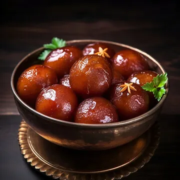

Home
Odin Recipes

Description
Gulab Jamun is a rich, sweet dessert made with khoya (dried milk solids) or milk powder, shaped into small balls, deep-fried, and soaked in a warm cardamom- and rose-scented sugar syrup.
It's often enjoyed during festivals, weddings, and celebrations across South Asia.
Ingredients
- 1 cup milk powder
- ¼ cup all-purpose flour
- 2 tbsp ghee
- ¼ cup milk
- ½ tsp baking powder
- A pinch of cardamom powder
- 1½ cups sugar
- 1½ cups water
- 2–3 green cardamom pods
- 1 tsp rose water or few drops of rose essence
- 1 tsp lemon juice
- Few strands of saffron
- Ghee
Steps
- Syrup: Boil sugar, water, cardamom. Add lemon juice & rose water. Simmer 5–7 min. Keep warm.
- Dough: Mix dry ingredients, add ghee & warm milk to make soft dough. Rest 10 min.
- Shape: Roll into smooth balls.
- Fry: Deep-fry on low heat until golden brown.
- Soak: Place hot balls in warm syrup for at least 1 hour.